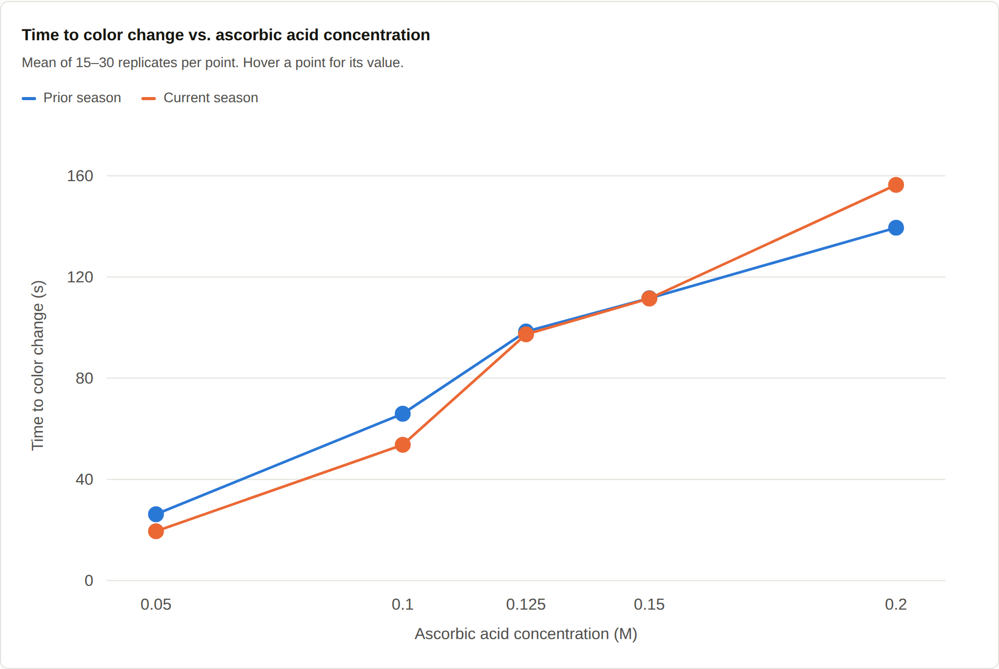

Chemical Engineering · Rose-Hulman Institute of Technology
Teddy Scharlotta
Junior in chemical engineering at Rose-Hulman, also enrolled in the Pre-Master's Track in Engineering Management. Most of my work so far has been in materials development and process design, in a shop and in a lab.
Projects

Ceramic Matrix Composite Development
Slurry formulation through sintering for an oxide ceramic composite built for service above 1000 °C in steam. First ceramic parts made in-house at the company.

Iodine Clock Calibration
More than 200 timed trials across five concentrations, reduced to a linear concentration–time calibration for the Chem-E-Car stopping mechanism.

Angled Cold-Storage Racking
Design and fabrication of prepreg storage racks in freezing conditions while maintaining a pallet aisle and weight of up to 100 lbs per box.
Skills
- Design of experiments & parameter studies
- Reaction kinetics and reproducibility analysis
- Composite layup, vacuum bagging, and cure
- Test plan development
- Python coding
- SketchUp solid modeling
- MIG welding and shop fabrication
- Excel data reduction and statistical analysis